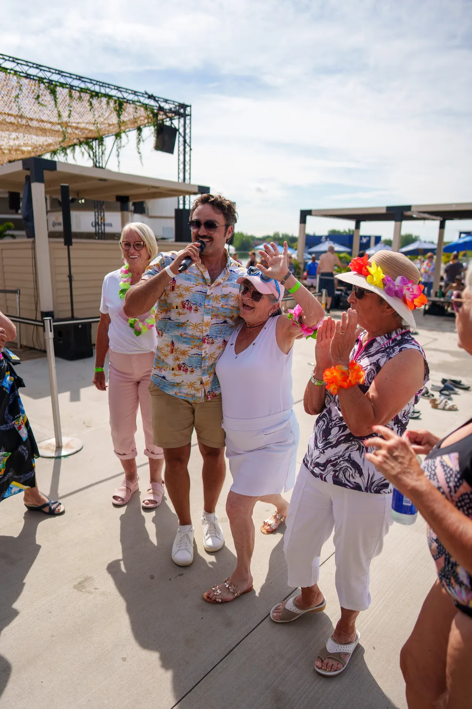
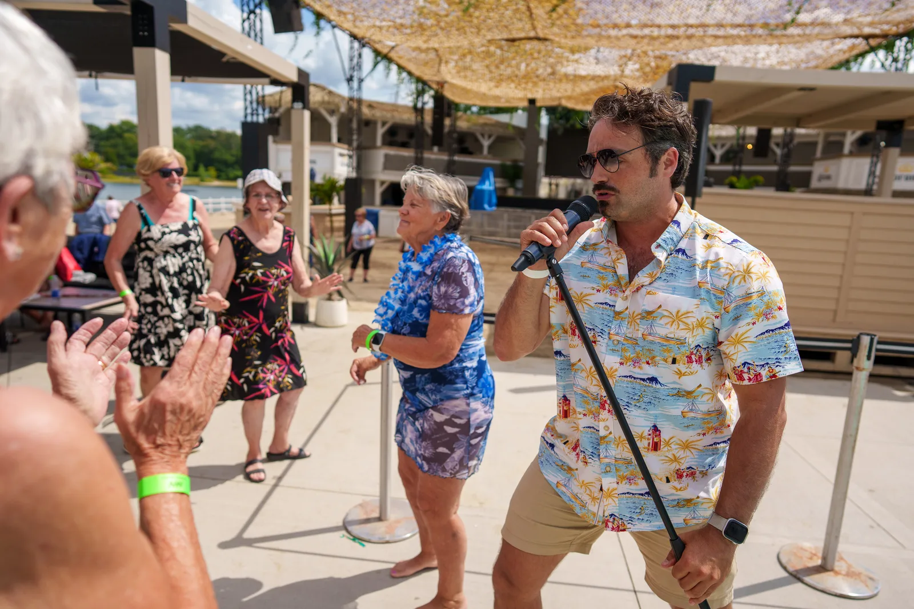
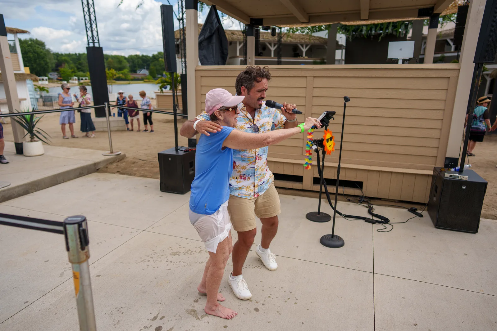
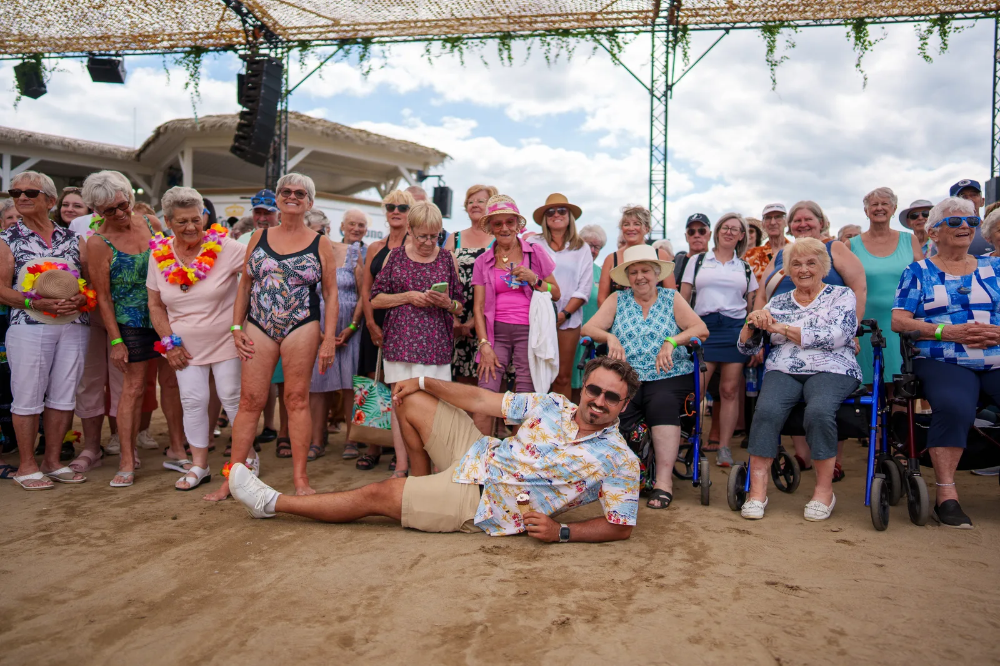
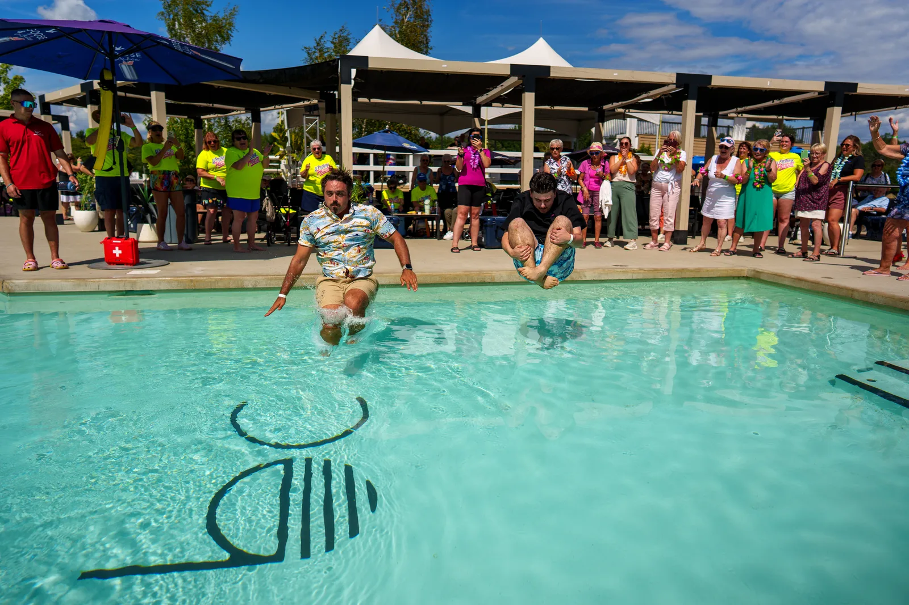
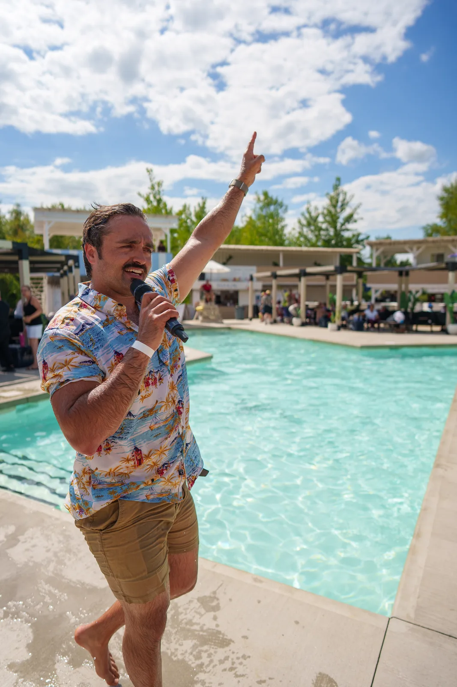
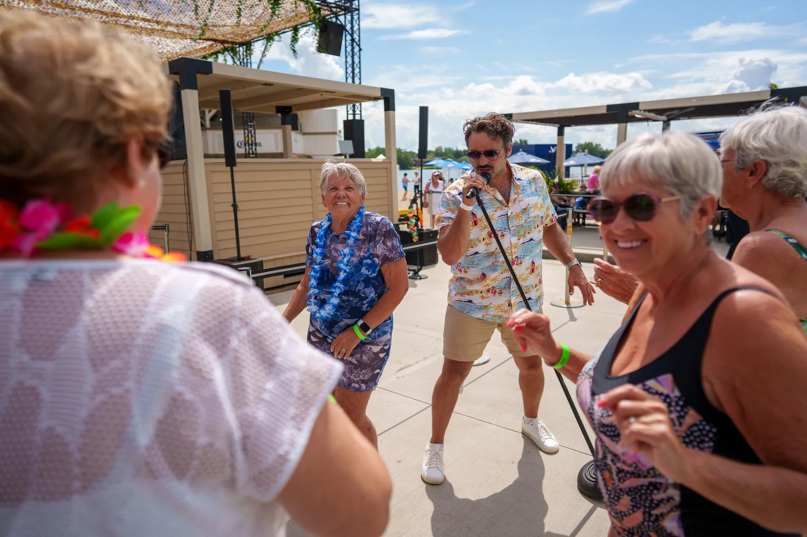

Un après-midi au Beach Club
Je suis allé chanter au Beach Club pour des personnes âgées. Colliers de fleurs, soleil, et une terrasse qui s'est transformée en plancher de danse avant la fin de la deuxième chanson.
Le micro se promène dans la foule, on reprend les refrains ensemble, quelqu'un m'invite pour un slow. Et comme je l'avais promis en montant sur scène : le spectacle s'est terminé dans la piscine.
Toutes les photos dans la galerie





Ce que vos résidents vont vivre
Les chansons de leur vie
Chanson française, classiques québécois, airs d'antan : le répertoire est choisi pour votre monde, et les refrains se reprennent en chœur.
Un vrai contact
J'arrive tôt, je jase, je retiens les prénoms. Pendant le spectacle, le micro va vers les gens — jamais personne n'est mis mal à l'aise.
De l'énergie, à leur rythme
Ceux qui veulent danser dansent, ceux qui préfèrent taper du pied tapent du pied. L'humour est bienveillant, toujours avec eux.

Pourquoi je fais ça
Mon objectif n'est pas seulement de divertir, mais de créer un vrai lien. Je vois dans les yeux des résidents l'étincelle qui s'allume quand une chanson fait remonter un souvenir. C'est pour ces moments-là que je fais ce métier.
- Clé en main — j'apporte mon système de son, réglé pour être bien entendu, même des malentendants.
- Participatif — chansons à répondre, petits jeux, anecdotes partagées.
- Sur mesure — fête thématique, anniversaires du mois, temps des Fêtes : on adapte.
Voyez l'ambiance par vous-même

Ce qu'on en dit dans les résidences
Ils me font confiance
On choisit une date?
Dites-moi votre résidence, le nombre de résidents et l'occasion. Je vous reviens avec une proposition simple.
Réserver un spectacle